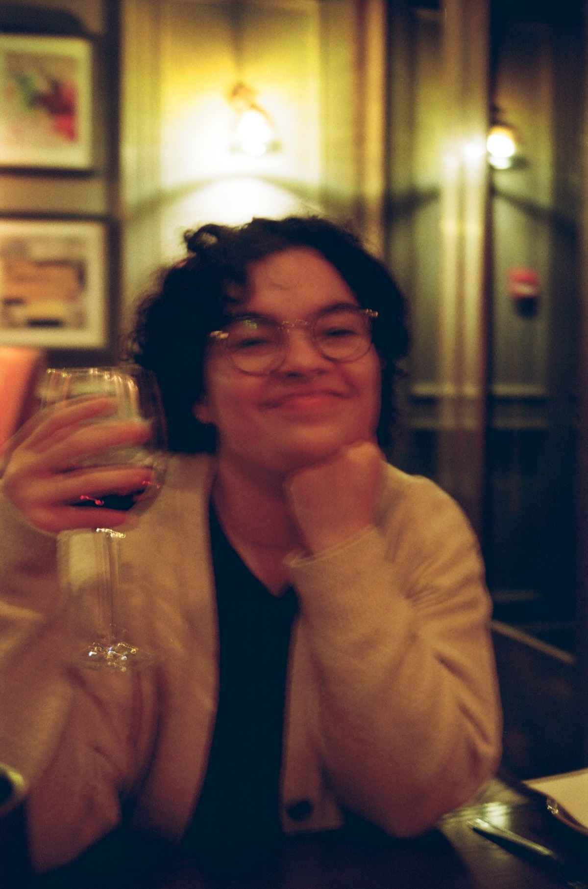

-
Laura is from a small archipelago in the Caribbean, called Puerto Rico. They come from a mixed educational and professional background where they worked in hospital settings in the mental health field, then segwaying into the urban planning field with a mental health and intersectional lens and now learning programming to further social science research in urban settings. As an advocate for community growth,they use humanistic and creative learning to give aid to those who need it. In their spare time, they love to partake in community art gatherings and tufting rugs.
